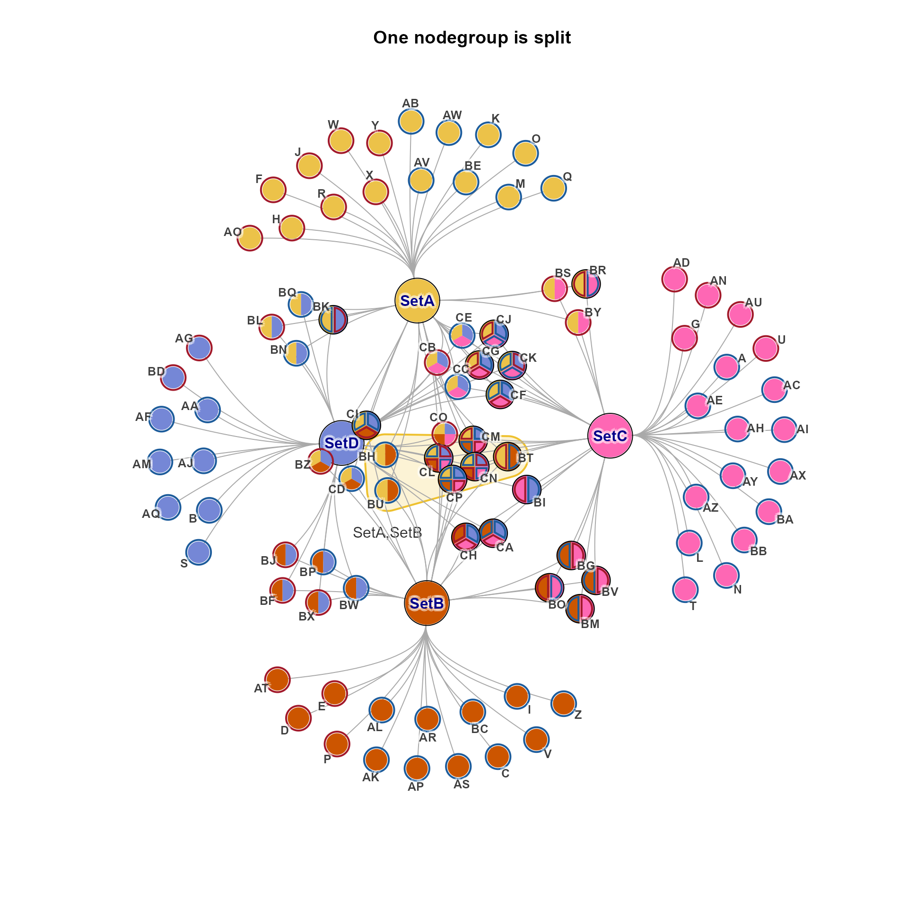
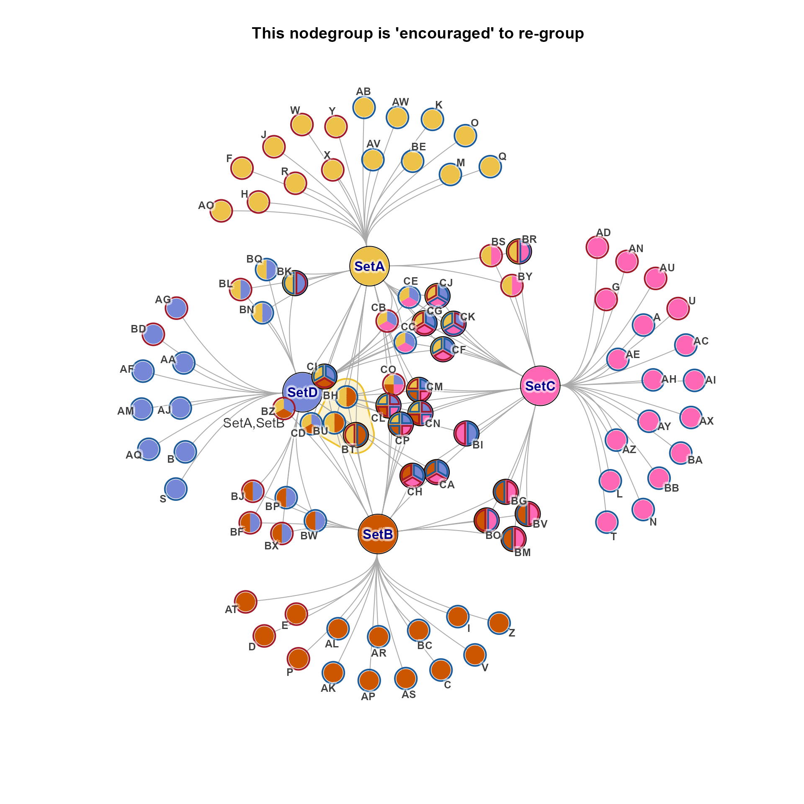
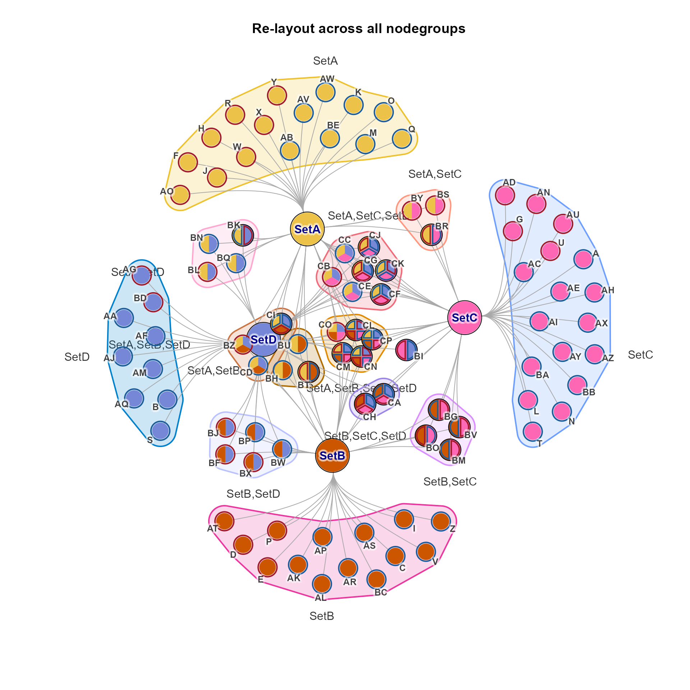

Relayout each nodegroup in a bipartite (Cnet) graph, experimental
Source:R/jamgraph-relayout-nodegroups.R
relayout_nodegroups.RdRelayout each nodegroup in a bipartite (Cnet) graph, experimental
Usage
relayout_nodegroups(
cnet,
repulse = 3.5,
fix_set_nodes = TRUE,
spread_labels = TRUE,
nodegroups = NULL,
add_edges = TRUE,
edge_factor = 2,
do_final_relayout = NULL,
final_repulse = 3.5,
...
)Arguments
- cnet
igraphobject with node layout already defined- repulse
numericdefault 3.5, passed torelayout_with_qfr()- fix_set_nodes
logicaldefault TRUE, whether to fix all nodes with nodeType=='Set' to prevent them from moving.- spread_labels
logicaldefault TRUE, whether to applyspread_igraph_labels()after the relayout iterations are complete.- nodegroups
listdefault NULL, intended to pass a custom set of nodegroups. When NULL it usesget_cnet_nodeset().- ...
additional arguments are passed to
spread_igraph_labels()
Details
This function iteratively re-applies a layout function
to each nodegroup in a graph, constraining the position of
all other nodes for each iteration.
Currently the layout uses relayout_with_qfr(), in future it
may use any layout function.
The purpose is to "encourage" nodes in a nodegroup to become bundled together.
Strategy:
Each nodegroup is isolated, and
relayout_with_qfr()is called on nodes in each nodegroup, while constraining all other nodes so they cannot move.In theory, using the same
repulse, the nodes would not move at all. Changing the repulse force could encourage nodes to stay together.By default
add_edges=TRUEwhich adds phantom edges to connect all nodes in a node group.The edge weight is scaled down by the number of nodes.
These phantom edges are intended to help 'encourage' the nodegroup nodes to group together.
Otherwise, most layout algorithms are only focused on specific edge forces, and not secondary forces which are common in Cnet plots.
For example, nodes in a nodegroup all share the same network connections, however they are not otherwise attracted to each other in a network layout. In absence of any repulsive force, they would all be co-located. But with some repulsive force, they are repelled from each other, and sometimes end up radially positioned around the plot, and not grouped together.
The phantom edges add some minimal force for nodes to be grouped closer together, and are removed once the layout is complete.
As a final polishing step,
do_final_relayout=TRUEenables a final round of global node layout, withfinal_repulse.We observed that sometimes the nodegroups are too clumped, in a big circular "ball" due to the phantom edge process above. The final relayout is helpful to allow nodes to space out somewhat.
It may be helpful to pass
niterto control the number of layout iterations in this final step. The default is 500.
See also
Other jam cnet utilities:
adjust_cnet_nodeset(),
adjust_cnet_set_relayout_gene(),
apply_nodeset_spacing(),
bulk_cnet_adjustments(),
get_cnet_nodeset(),
get_cnet_nodeset_vector(),
launch_shinycat(),
make_cnet_test()
Examples
cnet <- make_cnet_test();
ns <- get_cnet_nodeset(cnet)
# mark.groups: highlight just one nodegroup
# nodegroups: enables the edge_bundling to work properly
jam_igraph(cnet, mark.groups=ns["SetA,SetB"], nodegroups=ns,
main="One nodegroup is split")

cnet2 <- relayout_nodegroups(cnet, nodegroups=ns["SetA,SetB"])
#> [1] 3
#> [1] 3
jam_igraph(cnet2, mark.groups=ns["SetA,SetB"], nodegroups=ns,
main="This nodegroup is 'encouraged' to re-group")

cnet2 <- relayout_nodegroups(cnet, nodegroups=ns)
#> [1] 16
#> [1] 120
#> [1] 3
#> [1] 3
#> [1] 5
#> [1] 10
#> [1] 3
#> [1] 3
#> [1] 3
#> [1] 3
#> [1] 7
#> [1] 21
#> [1] 4
#> [1] 6
#> [1] 14
#> [1] 91
#> [1] 4
#> [1] 6
#> [1] 2
#> [1] 1
#> [1] 5
#> [1] 10
#> [1] 18
#> [1] 153
#> [1] 9
#> [1] 36
jam_igraph(cnet2, mark.groups=ns["SetA,SetB"], nodegroups=ns,
main="Re-layout across all nodegroups")
